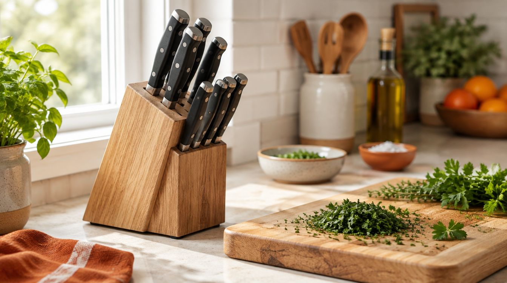
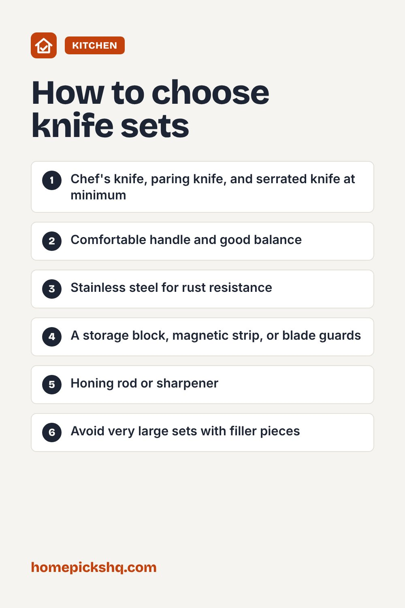

Best Kitchen Knife Sets: What You Actually Need

How we write these guides: we research manufacturer specifications, expert guidance, and owner feedback. We do not claim to have lab-tested every product. If product links are added, some may be affiliate links; see our disclosure.
A big knife block looks impressive, but most home cooks use three knives for almost everything. Choosing quality over quantity gives you better cutting and a safer kitchen. Here is how to decide what is worth buying.
The essential knives
Start with an 8 inch chef's knife for most chopping, slicing, and dicing. Add a 3 to 4 inch paring knife for small tasks and a serrated bread knife for loaves and tomatoes. Many cooks add a utility knife and kitchen shears. Everything beyond that is optional.
Forged vs stamped
Forged knives are made from a single piece of steel that is heated and shaped, which usually makes them heavier with a thick bolster. Stamped knives are cut from a sheet of steel and tend to be lighter and less expensive. A well-made stamped knife can be a great value, so judge by balance and comfort in your hand rather than just the label.
Steel and edge
German-style knives are typically a little softer and tougher, so they hold up well to daily use. Japanese-style knives are often harder with a thinner edge, which can cut very cleanly but may chip if misused. Stainless steel resists rust, which is helpful for most home kitchens.
Handles and balance
Choose a handle you can grip comfortably. A full tang, where the steel runs through the handle, usually improves balance and durability. Try to hold the knife if you can, because comfort is personal.
Care and sharpening
Hand wash knives and dry them right away. Do not put them in the dishwasher. Use a honing rod regularly to realign the edge, and sharpen with a whetstone or a professional service once or twice a year. Use a wood or plastic cutting board, not glass or stone.
Quick buying checklist
- Chef's knife, paring knife, and serrated knife at minimum
- Comfortable handle and good balance
- Stainless steel for rust resistance
- A storage block, magnetic strip, or blade guards
- Honing rod or sharpener
- Avoid very large sets with filler pieces

Frequently asked questions
Is a dull knife more dangerous?
Yes. Dull knives need more force and are more likely to slip.
How often should I sharpen?
With regular home use, once or twice a year, and hone before each use.
Are expensive knives worth it?
A good chef's knife is usually the best place to spend, since you will use it most.